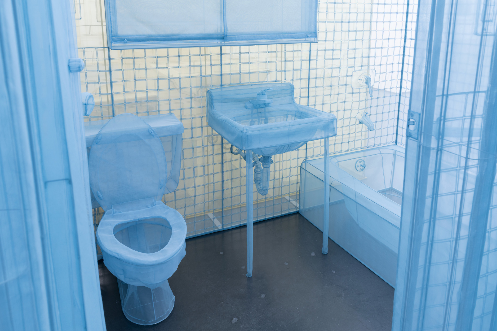
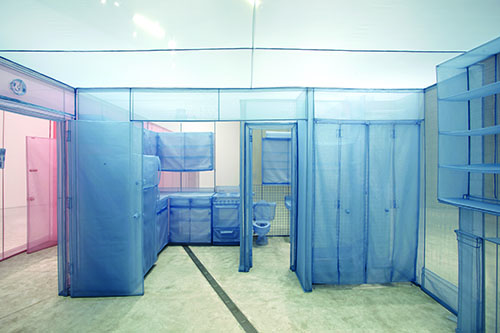
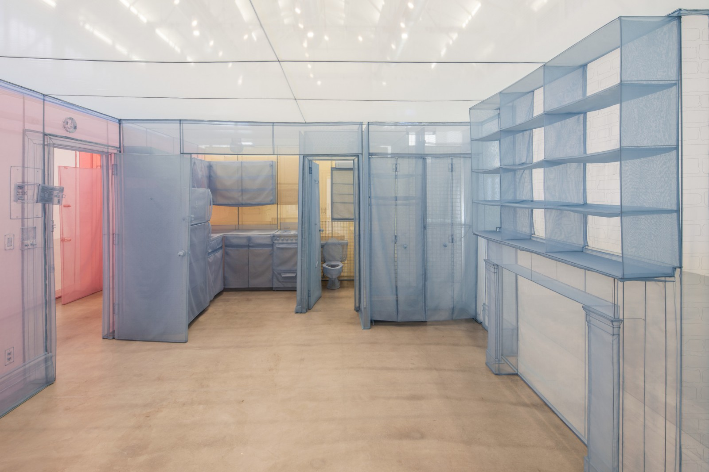
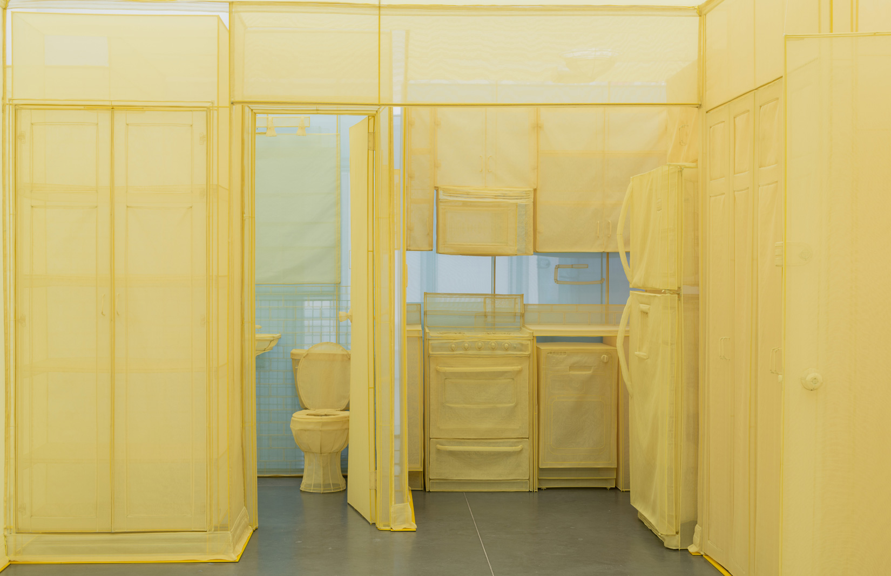

This webpage was inspired by '348 West 22nd Street' by Korean artist Do Ho Suh. According to LACMA, "Do Ho Suh’s works elicit a physical manifestation of memory, exploring ideas of personal history, cultural tradition, and belief systems in the contemporary world. Best known for his full-size, fabric reconstructions of his former residences in Seoul, Providence, Berlin, London, and New York, Suh’s creations of physicalized memory address issues of home, displacement, individuality, and collectivity, articulated through the architecture of domestic space."
348 West 22nd Street (2011–15) replicates the artist’s ground-floor residence from a single New York building. Created in luminous swaths of translucent polyester, the dreamlike rooms and hallways are supported by stainless steel. In this immersive passageway of conjoined rooms, visitors pass through an ephemeral representation of the artist’s personal history. The corridor, stairs, apartment, and studio are each rendered in a single block of color, with fixtures and appliances replicated in exacting detail. Fusing traditional Korean sewing techniques with digital mapping tools, the maze-like installation of 348 West 22nd Street balances intricate construction with delicate monumentality.


Read more about Do Ho Suh's 348 West 22nd Street Here.
For this webpage I wanted to adapt Do ho Suh's style of making these large scale sculptural pieces by translating his sentiment and materiality onto the screen. Instead of using the subject matters that he has used in his piece, I decided to pick a location of my own that holds the kind of sentimental memory to me, which was my grandmother's house in Seoul. This house was a big part of my childhood growing up, and where a lot of my most treasured memories took place. It especially holds a lot of sentiment to me because it was located in a old fashioned styled korean house in a neighborhood full of ones just like it. It was later torn down in 2006 because of gentrification and the city's decision to maximize the land space by building high rise apartments in this neighborhood. I wanted to portray this specific location because it reminds me of Do Ho Suh's work where he explores faint memories of places that hold obvious significance to his life. I also chose this house as the subject matter because I was very young when I developed some of my earliest memories at this location, and they have stayed as such strong and emotional memories, yet I don't have a good visual memory of it. Through this piece I wanted to ultimately convey the traits of partial memories that stay and leave in pieces and ultimately you are just left with the feeling and emotion attached to that memory.